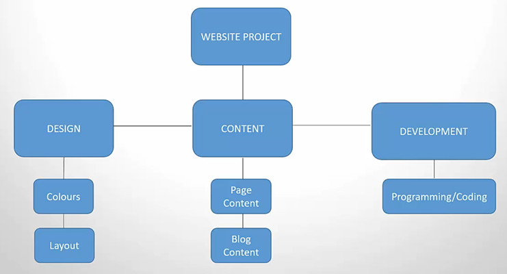

The management plans contain the strategy for managing the processes of each knowledge area of the project.
There is a management plan for each of the different knowledge areas of Project Management. These include:
Planning defines the processes and procedures that are to be followed for a knowledge area.
Executing focuses on the actual DOING of the processes and procedures that were defined during planning.
Controlling focuses on how to:
This is the process where the project manager gets work done on the project. It involves:
Producing deliverablesGathering Information from Project Workchanges done on the projectManaging people and keeping them involved in the projectThis process involves making improvements and avoiding failure using knowledge from projects. Use previous documents and have discussions with stakeholders
tracking, reviewing and reporting the progress of the project.current and forecasted performance of the project to the performance that was planned durig planning phase.Change requests refer to a formal request for changes or adjustments to be made on the project.
PICC is the process where change requests are evaluated, and then accepted or rejected.
Changes on the project are evaluated for impacts on:
Project manager completes and wraps up the project or phase, and should ensure the following:
formal acceptance of the project / product from the customerfinancial reporting of the project closure of procurementsfinal lessons learnedfeedback from customerscope management planThis process is the process in which requirements are collected from stakeholders to meet project objectives.
These requirements will form the basis for the project scope and the work to be done on the project to make it successful.
How to collect requirements:
Identify all the stakeholdersAsk them for the requirements in detailRank the requirements according to priorityDefine Scope Process is the process in which detailed description of the project and product is developed. It includes:
needs to be done on the projectdeliverablesincluded and NOT included on the projectAfter collecting requirements and defining on the project, the Project Manager can then determine the budget and schedule.
The objective is to develop a realistic budget and schedule that can achieve the scope without conflicts or problems. (PM's responsibility)
total scope of work to be done on the project to create the deliverables.basis for the estimation of cost, time and resources.
Create WBS process is the process in which deliverables and project work are broken down into smaller and manageable components.
Example:

Validate Scope refers to frequent meetings with the customer / sponsor to gain formal acceptance of deliverables.
The customer will either accept the deliverables or request a change to be made.
Control scope is primarily concerned with two main areas:
measure and analyze work performance against the scope baseline / scope statementmanage scope changes to the scope baseline / scope statement